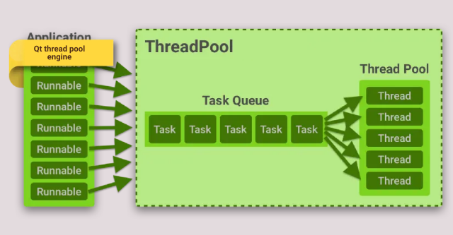

Пул потоков Qt используется для возможности снижать нагрузку на центральный процессор, не забивая его неограниченным количеством одновременно выполняющихся потоков, как это может произойти если пользоваться сырыми объектами QThread. Пул потоков представляет собой очередь задач (объектов QRunnable), которые запускаются на исполнение в отдельном потоке, но только в тот момент, когда имеется свободный поток для исполнения. После выполнения задача уничтожается.

По сути, пул потоков Qt QThreadPool управляет набором потоков (QThread), из которых он состоит. По умолчанию количество потоков ровно числу ядер процессора, однако это значение можно изменить через метод maxThreadCount(). В QThreadPool поток удаляется если в течении определенного времени (по умолчанию 30 сек.) в него не поступают задачи. Задать такой таймаут можно методом setExpiryTimeout(). При поступлении задачи поток вновь будет создан.
Можно было бы создать экземпляр QThreadPool и добавлять задачи в него, однако, каждая программа, написанная с использованием Qt уже имеет запущенный пул потоков (глобальный пул программы). Обратиться к глобальному пулу можно с помощью статической функции QThreadPool::globalInstance().
Задача, добавляемая в пул, должна наследовать класс QRunnable — это абстрактный класс с чисто виртуальным методом run(). Метод run() должен содержать код, который как раз таки и выносится в отдельный поток. После завершения работы, объект может быть автоматически удален, если установлен соответствующий флажок (по умолчанию таковой фложок установлен). Установить или снять такой флажок можно методом QRunnable::setAutoDelete().
Чтобы передать результаты выполнения задачи во внешний мир, можно использовать механизм сигналов и слотов. Но QRunnable не является наследником QObject, поэтому объект задачи можно сконструировать, используя множественное наследование.
Класс задачи может выглядеть примерно так:
class Task : public QObject, public QRunnable {
Q_OBJECT
public:
explicit Task(QString expr, QObject *parent = 0);
void run();
signals:
void result(QString);
protected:
QString m_expr;
};
// Конструктор задачи
Task::Task(QString expr, QObject *parent) :
QObject(parent),
m_expr(expr)
{
}
// Действия задачи, предназначенные для выполнения в отдельном потоке
// на примере вычисления математического выражения
void Task::run() {
QScriptEngine engine;
QString res = m_expr + " = " + engine.evaluate(m_expr).toString();
if (engine.hasUncaughtException())
emit result("");
else
emit result(res);
}
Чтобы получить сигнал в конце выполнения задачи, можно воспользоваться следующим соединением:
connect(task, SIGNAL(result(QString)), SLOT(on_result(QString)));
Положить задачу в пул потоков можно следующим кодом:
QThreadPool::globalInstance()->start(task);
Таким образом можно распараллелить программу с использованием пула потоков библиотеки Qt.